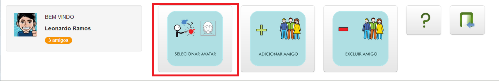
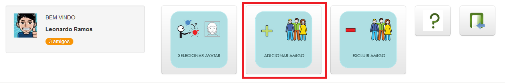
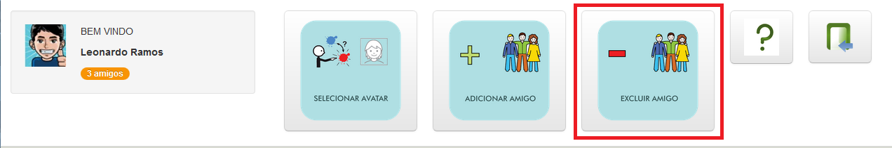
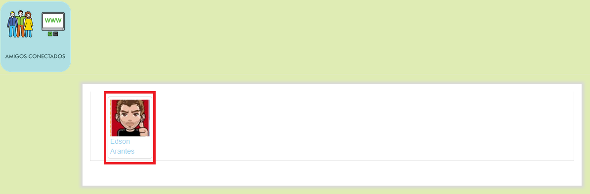
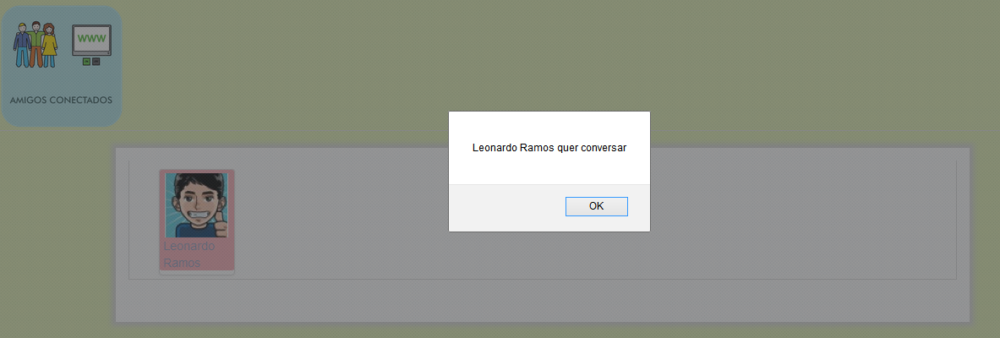

1 Trocando Avatar
Cada usuário possui uma representação no sistema chamada avatar, ela se encontra no canto esquerdo da tela incial. Para modificar seu avatar basta clicar no botão "Selecionar Avatar".
Menu superior: Selecionar AvatarAo clicar sobre esta opção, abrirá a caixa de diálogo "Escolha um Avatar" com as opções de avatares. Para escolher um dos avatares basta clicar sobre ele. E para cancelar basta clicar sobre a opção fechar.
Após escolher o avatar, automaticamente o avatar será trocado na tela prinicipal.
2 Adicionando um amigo
Cada usuário possui uma lista de amigos no sistema indicados embaixo de sua foto, inicialmente o usuário não possui nenhum amigo. Para adicionar basta clicar no botão "Adicionar Amigo".
Menu superior: Adicionar AmigoAo clicar sobre esta opção, abrirá a caixa de diálogo "Digite o nome do amigo". Para adicionar um amigo basta digitar o nome ou parte dele selecionando entre as opções existentes e finalizando ao clicar em Adicionar. Para distinção entre pessoas com o mesmo nome foi adicionado o e-mail ao lado do nome. Para cancelar basta clicar sobre a opção fechar.
Após escolher o amigo, automaticamente o amigo é adicionado a lista do usuário. Podendo aparecer no quadro de usuários online ou offline.
3 Excluindo um amigo
Para excluir amigos basta clicar no botão "Excluir Amigo".
Menu superior: Excluir AmigoAo clicar sobre esta opção, abrirá a caixa de diálogo "Arraste na lixeira para excluir" com os amigos. Para excluir um amigo (ou vários) basta arrastá-lo para a lixeira e clicar em salvar. E para cancelar basta clicar sobre a opção cancelar.
Após excluir os amigos, automaticamente a tela principal será atualizada.
4 Inciando uma conversa
Para iniciar uma conversa basta clicar em um amigo online.
Iniciar ConversaInicialmente o chat conta com o usuário que iniciou a conversa no lado direito da tela. No lado esquerdo estão as categorias de pictogramas. No centro a conversa propriamente dita e na parte inferior o campo onde pode-se enviar um texto para um amigo. Para fechar a conversa basta clicar para fechar a janela, a conversa não é salva.
Para selecionar um pictograma basta clicar na categoria e depois no pictograma que ele irá automaticamente para o campo de texto na parte inferior da tela. Pode-se ainda adicionar caracteres a conversa clicando no campo no lado inferior e escrevendo. Para enviar o texto basta clicar em "Enviar" que ele irá aparecer no centro da tela no log da conversa. Para apagar o último pictograma basta clicar no botão "Apagar".
5 Recebendo uma solicitação para iniciar a conversa
Caso o usuário receba uma solicitação para iniciar uma conversa, um alerta irá aparecer na tela e o amigo que solicitou irá aparecer destacado entre os amigos online.
Conversa RecebidaPara responder a solicitação basta clicar no amigo destacado que o chat irá ser aberto com todos os participantes da conversa.